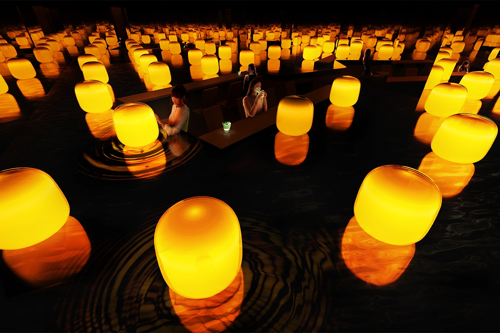
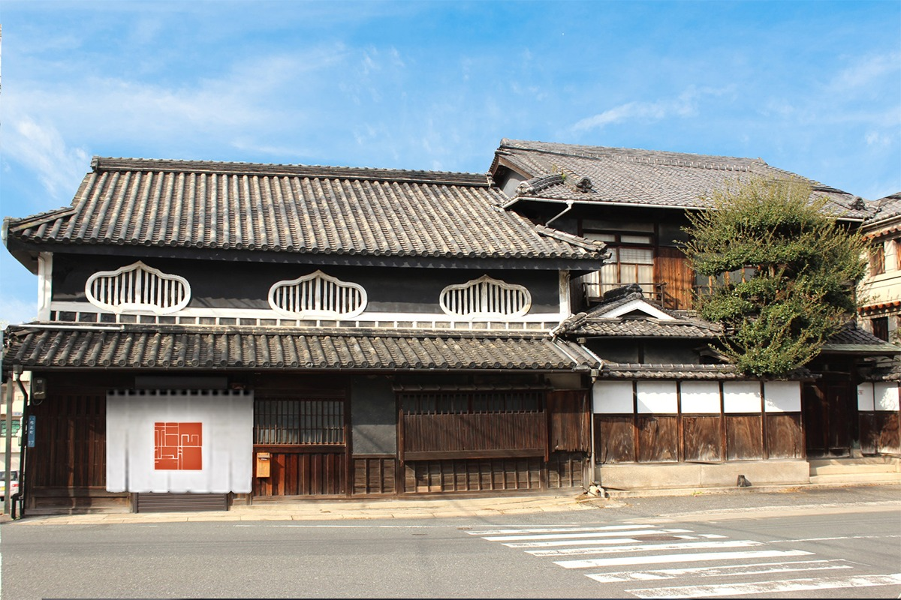
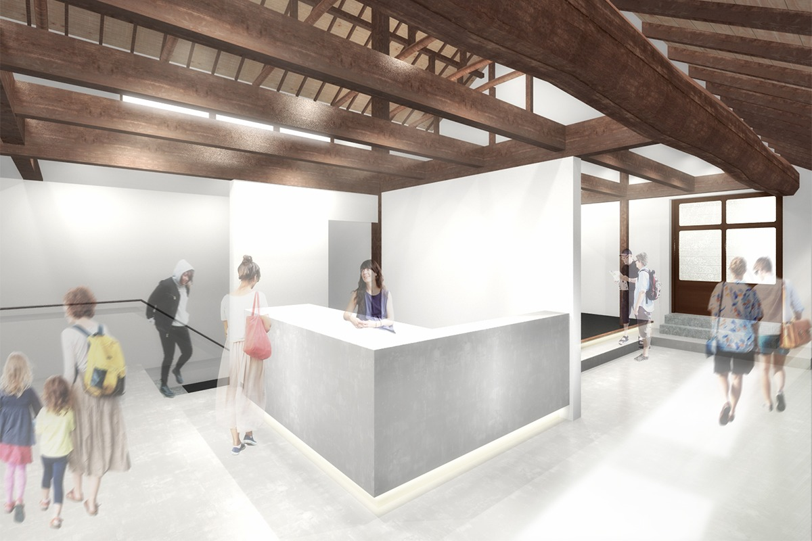
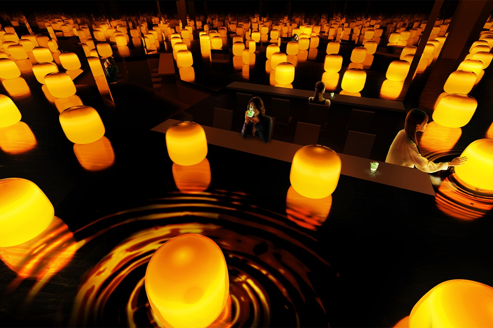
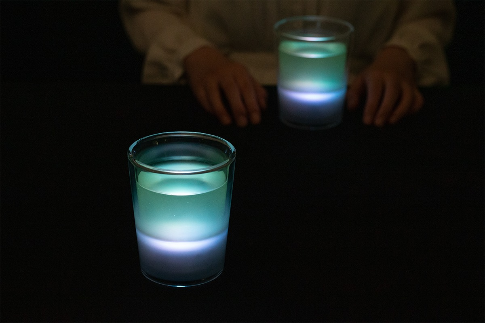

Префектура Окаяма · город Окаяма · искусство
«Фукуока сёю»: соевый склад у сада Коракуэн стал галереей

В двух шагах от знаменитого сада Коракуэн стоит дом, который помнит и соевый соус, и банковскую кассу. Теперь здесь наливают чай, светятся лампы и проходят выставки.
Здание
Дом, который помнит соус
Галерея «Фукуока сёю» открылась 15 апреля 2021 года в квартале у главных ворот сада Коракуэн. Сам квартал особенный: это единственная часть исторической застройки центра Окаямы, уцелевшая от авианалётов Второй мировой войны, и по сей день она хранит память о временах, когда здесь шумел посад замка Окаямы.
Главный дом галереи построили в эпоху Мэйдзи, а флигель в первые годы Сёва. Почти столетие здесь варили соевый соус, а позже размещалась касса городского банка. Старое здание, известное как «бывший соевый склад Фукуока», отремонтировали и передали под культуру: фонд Исикавы, государственная некоммерческая организация, которая развивает искусство Окаямы, вместе с городом и префектурой проводит раз в три года международную выставку современного искусства «Окаяма Арт Саммит» и развивает проекты отелей, которые мировые художники создают вместе с японскими архитекторами.


Выставка
Лампы над водой
Первой выставкой стала инсталляция команды teamLab, художественного коллектива, который с 2001 года соединяет искусство, науку и технологии. С апреля 2021 по март 2022 года в бывшем соевом хранилище шла выставка «teamLab: Tea Time in the Soy Sauce Storehouse», и её главный зал находился в подвале, там, где когда-то стояли бочки с соусом.
Над тёмной водой висели сотни ламп с абажурами из муранского стекла. Каждая лампа жила своим ритмом: вспыхивала, гасла, снова вспыхивала. Толкнёшь её, она упадёт, но обязательно поднимется, зазвенит и вспыхнет, а потом вернётся к собственному ритму. Постепенно лампы начинали влиять друг на друга: их мерцание выравнивалось, расходилось волнами, снова сходилось. Этот эффект называют синхронизацией: так ведут себя маятники двух часов на одной стене, светлячки, вспыхивающие согласованно над рекой, и клетки сердечной мышцы, каждая из которых не видит целого, но вместе они держат один ритм.

Чай в этой истории был не напитком, а частью экспозиции. Стоило растереть порцию чая, как она начинала светиться и звенеть в своём ритме, а поднята над столом, звенела и горела ярче. Допьёшь чашку до дна, и свет гас: чай больше не влияет на комнату.

Сегодня
Что в галерее сейчас
Галерея работает под управлением фонда Исикавы и по-прежнему принадлежит кварталу у Коракуэн: здесь проходят выставки, часть помещений сдаётся под события, а первый этаж отдан пространству кухни Сэтоути. Актуальные часы работы и цены на официальном сайте не публикуются: когда галерея открывалась, вход стоил 1 000 иен вместе с чашкой чая EN TEA, актуальные цены смотрите на сайте. Последняя выставка, о которой пишет сайт, «Коллекция Исикавы», открывалась весной 2023 года.
Галерея «Фукуока сёю» (FUKUOKA SHOYU GALLERY)
- Адрес
- префектура Окаяма, город Окаяма, район Кита, Юминотё, 17-35
- Сайт
- fukuokashoyu.org